A Data Science study of Small Rural Towns in the Netherlands
IBM Data Science Certificate - Capstone Project
Delft,Netherlands - August 22, 2021
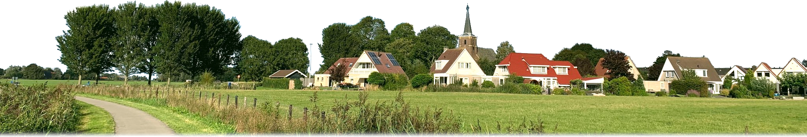
The Town of Lekkum - credit@TimoJepkema
Introduction
It is often said that rural towns in modern society are struggling. Usually it concerns historical places that once relied on manual labour jobs or agriculture for income. With automation and globalisation many of those jobs are gone and while cities found new roles with trade and innovation, rural towns are still lacking behind. There are many small rural towns in the Netherlands as well, but we are a small country and even towns that we call very remote are still relatively close to bigger places. In this text we want to take look at the status of Small Rural Towns (SRTs) in the Netherlands and what the impact is of these trends.This will be a study from a data science perspective. By using publicly available data from the Central Bureau of Statistics (CBS), Metatopos.eu and the Foursquare API, we can compare key metrics of small rural towns with cities and with other big towns. We can examine which towns are succesful and will try to identify factors that can help other communities.
This text is intended for (local) governments to create policies that stimulate local economies, for business men that want to invest in rural towns, people that are looking to move to the countryside or for residents that want to help their communities.
The objectives are:
- Identify and locate Small Rural Towns of interest, based on Population Size and Distance to a city.
- Make an Assessment of Small Rural Towns, relative to cities and Big towns, based on Population Growth and Average Income.
- Score Small Rural Towns indidually, based on Population Growth and Average Income.
- Create Neighborhood profiles for Small Rural Towns
- Examine relationships between performance and Neighborhood features
Data
We will acquire data from 3 different sources:-
Central Bureau of Statistics (CBS)
- Table 84992NED: List of registered places, cities and towns, in each municipality in the Netherlands. Dated Jan 1, 2021.
- Table 84799NED: Population size and area size for each 4-digit postalcode in the Netherlands. Data collected for year 2020.
- Table 83502NED: Population size for the period 1998-2020, for each 4-digit postalcode. Last update Sep 4, 2020.
- Table 84286NED: Average income for each 4-digit postalcode. Dated year 2018.
-
Metatopos.eu
List of all 4-digit postalcodes belonging with each registered place, city or town. Dated 2021. -
FourSquare API
ist facilities and venues in the neighborhood of selected small rural towns.
Methodology
In this section we will describe the steps that were used for the analysis. A complete description can be found here: GitHub.com/LauLau85/Coursera_CapstoneGathering Data
We start by collecting data from various sources. The Central Bureau of Statistics (CBS) collects many different indicators and statistics and makes them publicly available through their data portal: Opendata.cbs.nl. Data can either be downloaded in csv format or requested with an API. Through Table 84992NED we obtain a list of all 2500 registered places the Netherlands, along with their municipality, province and place code. Latitude and Longitude for each place are obtained using the GeoPy package.Table 84799NED contains the population and area size, listed for each neighborhood-block ('wijk') along with the most dominant 4-digit postalcode in that block. By scraping from Metatopos.eu, which obtains its data from the postal-service, we get a list of all postalcodes belonging with each place. The designations of registered places, postalcode-areas and neighborhood blocks are done by different organisations and they can overlap. However, as a general rule, each block or 4-digit postalcode is to be contained within a registered place in its entirety. This means that we can group the postalcodes for each place and summate the metrics, to get a reasonable estimate of the population and area size of each place.
The result is a dataframe which contains registred places, with municipality and province, their respective population and area size, their longitude and their latitude. Distances and population density can be calculated from these as well.
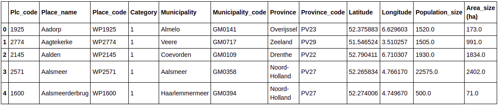
Sample of Dataframe df_PlacesNL
Selecting Small Rural Towns
The next step is to select places of interest from the dataframe. We are looking for small towns located at some distance away from a city center. What constitutes 'small' or 'some distance away' has to be decided on the available data. To do that, we plot population size and density for each place, ordered from small to large. From this plot we can see that there are a few places that have a lot of people. These are the big cities such as Amsterdam, the capital, with over 800.000 people. However the vast majority are much smaller places and the medium size is actually just over 1500 people.We divide the set into 3 categories:
- Cities, with over 104.000 people
- Big towns, between 3000 and 104.000
- Small towns, between 300 and 3000 people
Places with fewer then 300 people are discarded. These often involve isolated houses or very scarcely populated areas and they are fluctuating too much to get a good measure.
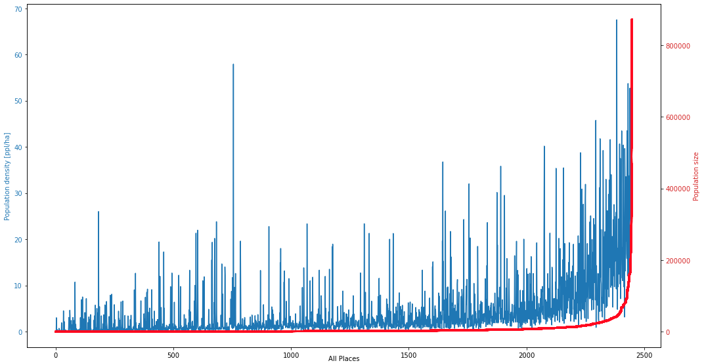
Population Size and Density for each Place
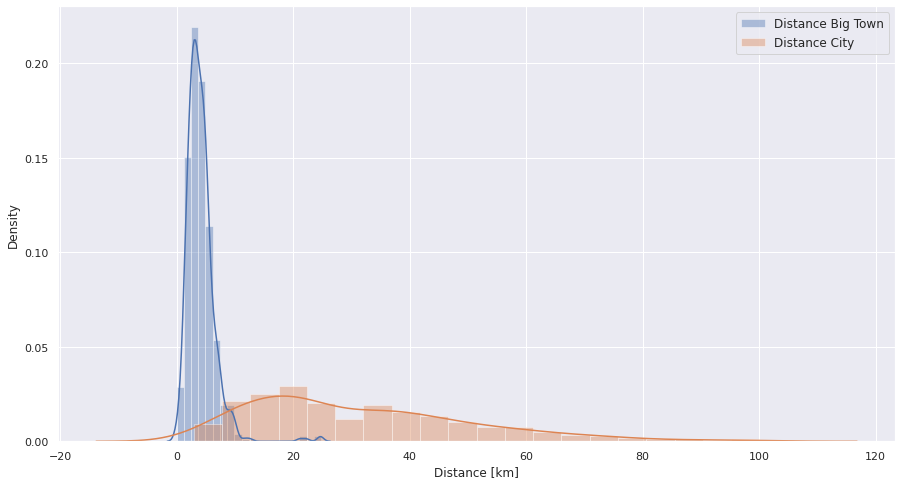
Distances Small Towns to City and Big town
We now look at the location of the small towns. Using the GeoPy package, we can calculate their distance to the nearest big town and city. Shown in the figure is
a density plot of the distances, in km, against the proportion of the samples. The Netherlands is a small country and many of the places are located in the
close proximity of larger towns. We want to select rural towns, but still get a decent sample size. As a threshold, places were selected with a minimum
distance of 15km to the nearest city and a minimum of 4km to the nearest big town. Using these criteria, we find 249 Small Rural Towns (SRTs).
These are places with a population between 300 and 3000 people, located at a minimum 15km from the nearest city and 4km from the nearest big town.
Assessment of Small Rural Towns
After selecting the SRTs, we want to get an assessment of their status. Population growth and income levels are two basic indicators which can be obtained from tables from the CBS. Population numbers are listed in table 83502NED for the period between 1998-2020. Average Income for 2018 was found in table 84286NED. 2018 is slightly out of date, but since 2020 or 2021 are not entirely representative either, due to the COVID-19 pandemic, we will use this as a comparative indicator.Data from these tables is listed per neighborhood block along with the most dominant 4-digit postalcode in that block. We can link postalcodes to the corresponding place and then group them together to get the indicators for each place. In case of Average Income, we take the average of the values, which will get us the average for the entire place. To get a general assessment of the performance of SRTs, we will compare these indicators with cities. We could not find data for all SRTs, so we had to continue with 244 places.
Performance Scores Small Rural Towns
In the previous section we looked at average figures, but there is a significant spread and there are large differences between the towns.In the next figure, Population Growth (PG), in percentages, is plotted against the Relative Income (RI) for SRTs. RI is the average income subtracted with the national average of €26.600 in 2018. This gives us a better intuition of the welfare of a town.We can see there is a wide range in PG and RI, but we could find no meaningful relationship between them. The correlation coefficient was found to be 0.17. To assess the performance of SRTs, we normalise PG and RI and use a weighted scoring. PG is deemed more important, so this gets a weight of 2. RI gets a weight of 1. Multiplying by 10, we get a resulting score on a scale from 0 to 10. Peformance score for each SRT is plotted in figure 7.
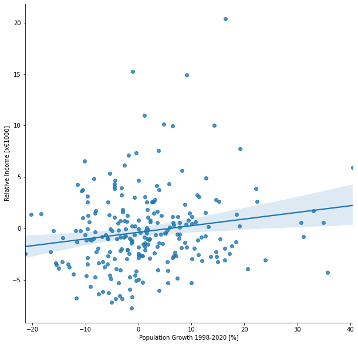
Relative Income vs Population Growth
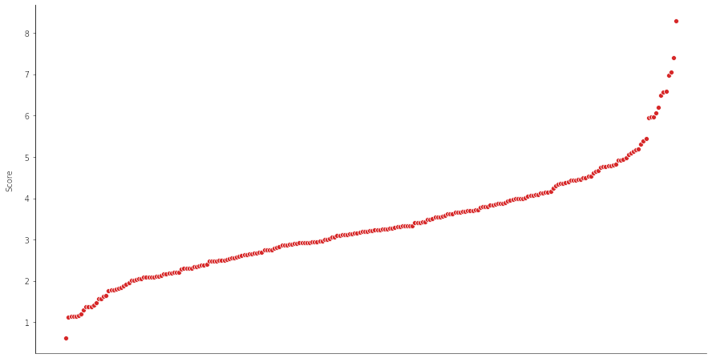
SRT Performance Scores
Profiling SRT Neighborhoods
We want to know whether there are potential factors that influence the Performance of a town. In particulat factors that we might be able to influence, such as access to facilities or by stimulating certain industries, which we might use to stimulate SRTs. In this section we will use the FourSquare API to build a neighborhood profile for each SRT. With these profiles, we will then calculate correlation coefficients between features and Performance Score.Access to facilities could be a factor that can influence the succes of a town. If it is, SRTs that are closer to facilities would have an higher Performance Score. To test this hypotheses, we will list the nearest distance to a number of facilities for all 244 SRTs: Hospital, Train station, Elementary school, High school, Police and Fire station. We will use FourSquare API to find the facilties and the GeoPy library to find the nearest in the Area. FourSquare API could not find them all, so we have added a few by hand.
The second factor that we would like to examine is whether the presence of certain industries affects the performance of a town. To test this, we use FourSquare API to list all venues, in 9 different categories, within a radius of 1500meter of the center of the SRT. In total we found 5583 venues.
Feature Analysis
In the last part we try to find relationships between the features and the Performance Score. To do this, we plot Pearson's Correlation matrix, with the figures inside, for each of the features against the performance score.Results
We now look at the results of our analysis.Assessment Small Rural Towns
In the next two figures, we see Average Populations and Income for the different size categories. In the first figure is average population plotted, over the last 22 years. We can see clear differences between them. Cities grew from 200.000 to 230.000, or 15%. Big towns grew from 126.000 to 138.00, or 9.5%. Small rural towns however, on average, grew only by about 20 people over the last 22 years. This constitutes just 1.7% and the line only moves due to fluctuations in the data.When we look at the Average Income for 2018, the differences are smaller. In 2018, the national average was €26.600. The medians of cities and big towns are around that figure as well. For SRTs, the median is slightly lower, just over €25.000. We do see a greater spread among big towns and SRTs. There are outliers, but also places that are €6.000 below the national average.
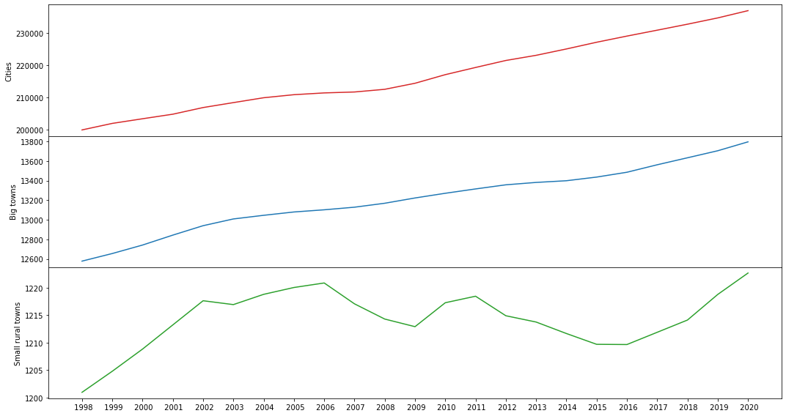
Average Population, from 1998 to 2020, per Size Category
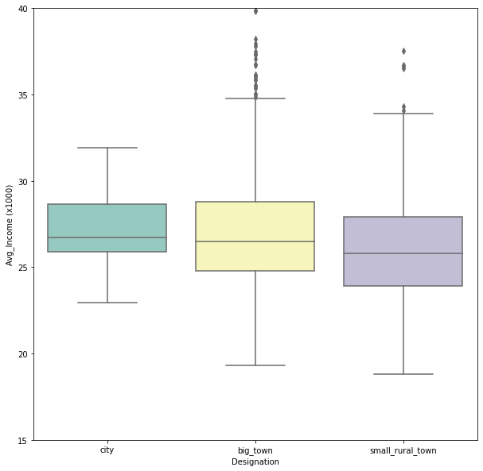
Median Income, in 2018, per Size Category
Performance Scores Small Rural Towns
We scored all small rural towns on a scale from 0 to 10, based on Population Grwoth and Average Income. In the next figure we see all SRTs, ordered from lowest score to highest, with their Population Growth and Relative Income.
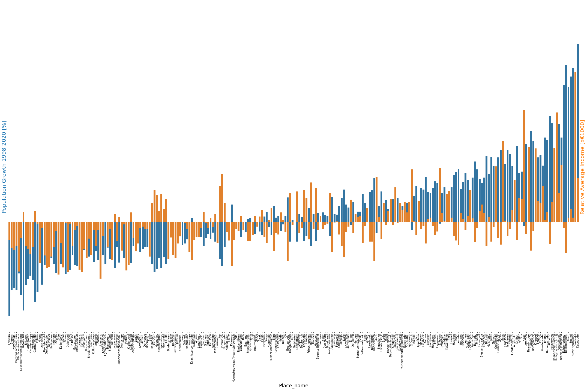
All SRTs with Population Growth and Relative Income
We can see what the worst and best towns are. We can also divide them into 3 equal-size groups and then
plot those on a map with Score labels: SRTs doing badly (red), SRTs doing well (green) and SRTs in the middle (yellow).
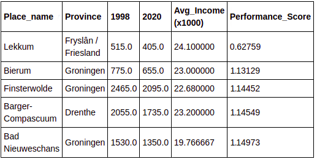
The 5 SRT with the worst Performance Scores
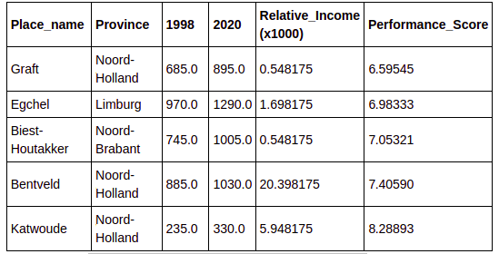
The 5 SRT with the best Performance Scores
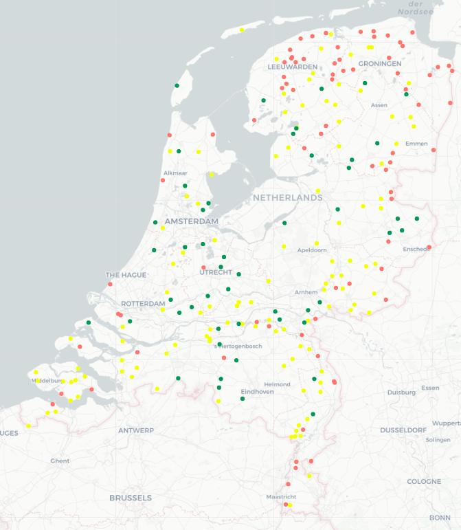
SRTs on a Map with Score Labels.
SRT Neighborhood Profiles
The result of SRT Neighborhood Searches.
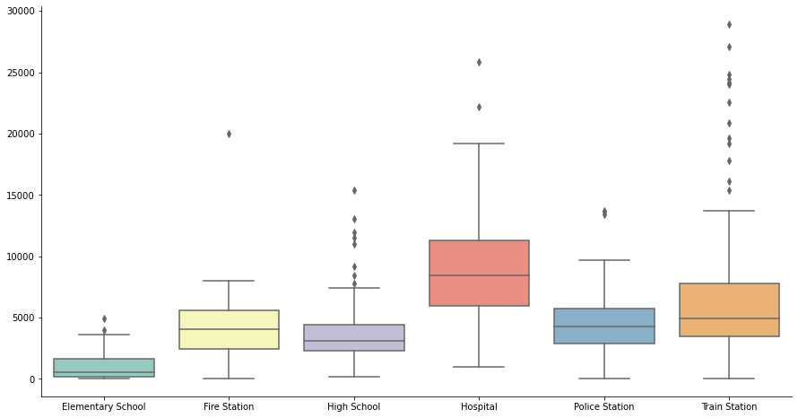
Distances to Nearest Facilities
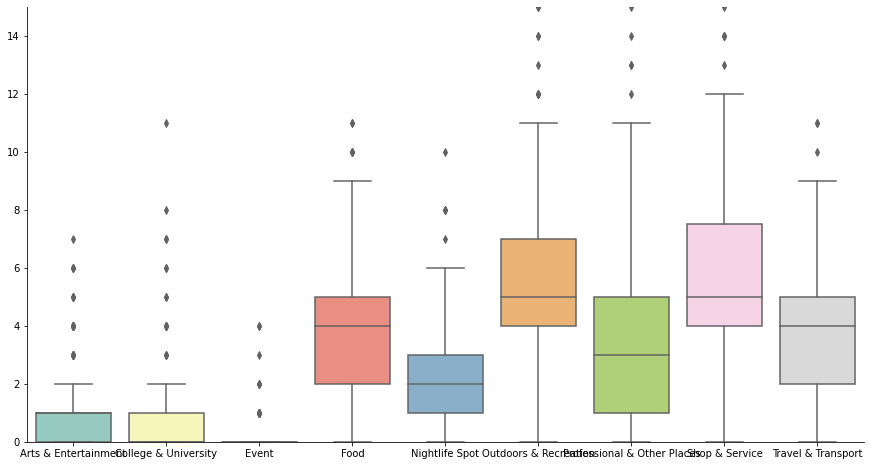
Venues within a 1500m radius
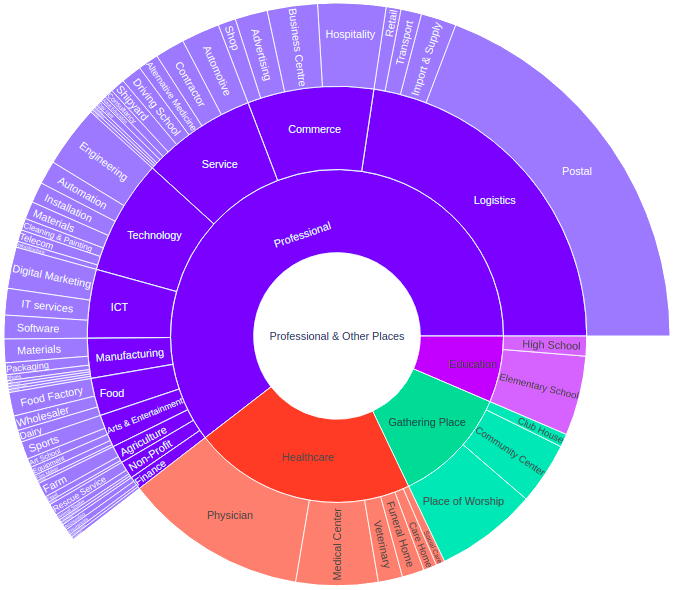
Overview of Professional places in SRT Neighborhoods
SRT Feature Analysis
Correlation Map Plots.
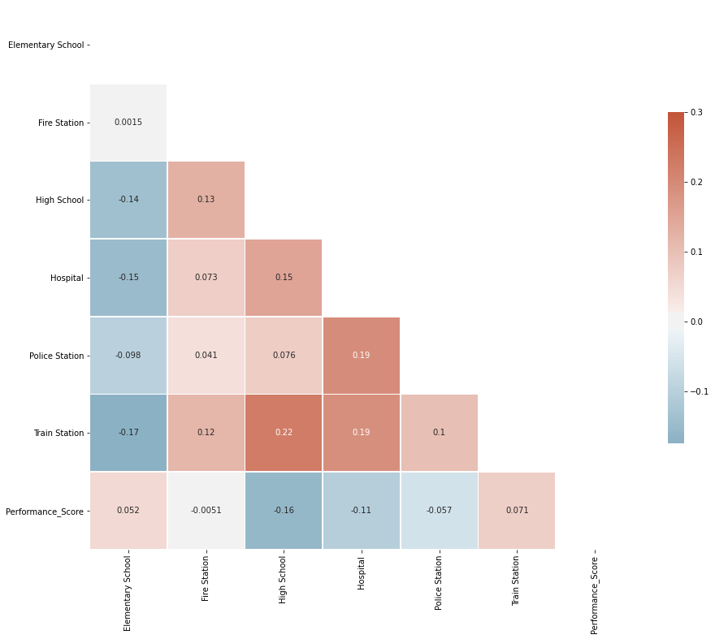
Facility distance vs Performance Score
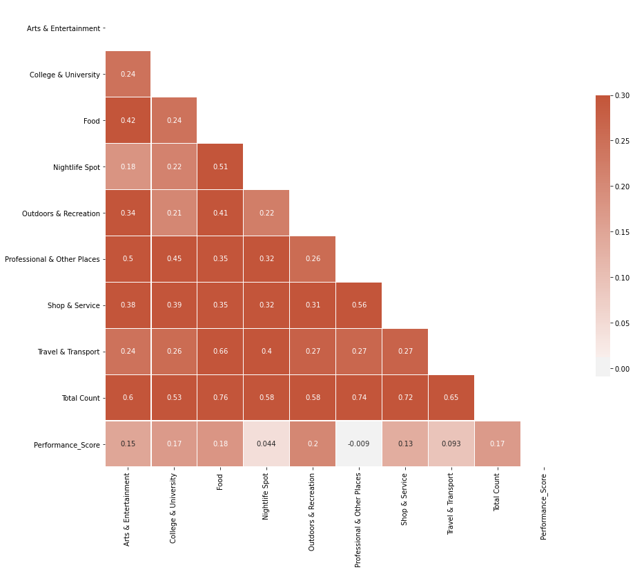
Venues vs Performance Score
Discussion
The purpose of this text was to look for relevant factors that might influence the performance of a town. Unfortunately we could find no meaningful relationship. All correlation coefficient were 0.2 or less, indicating a very weak relationship. We did not expect this result.Possible reasons why distance to facilities is not a factor might be because there is too little spread between the towns and therefore it doesn't have an influence. Another reason might be that the absolute distances are still all quite close, because the Netherlands is a small country. 30km, the largest distance to a hospital, is still only a 30minute drive.
The presence of certain venue types also didn't had any effect. It might be our data wasn't detailed or extensive enough. Another reason might be that again, because the Netherlands is a small country, venues in the near vicinity are not very important as towns can rely on bigger places for employment. This would also correspond with the absence of a strong relationship between Average Income and the Population Growth of a town. It appears that income is not the stongest motivation for people leaving a town.
Conclusions
Using publicly available Data we were able to identify 244 Small Rural Towns in the Netherlands.From the results of the Assesment, we found that SRTs are falling greatly behind in Population Growth, compared to Cities and Big towns. But we could find no significant difference between Average Incomes.
We scored the individual towns on a scale from 0 to 10 and discovered a large spread in the figures.
We've created Neighborhood profiles.
From the correlation matrices we could not find any meaningful relationship between any of the features and the Performance Score.